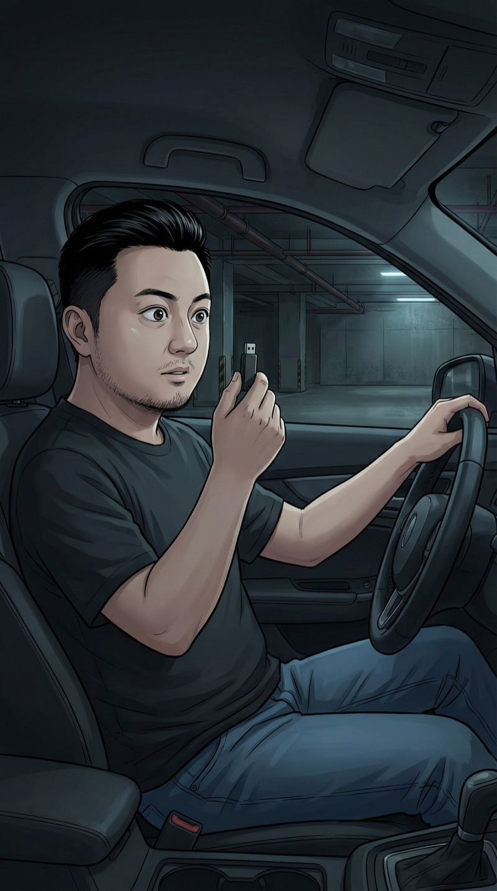
我盯着这个U盘看了整整三分钟。上一局赢来的筹码里，夹着这么个不起眼的东西。
问题是——谁会把U盘藏在筹码盒的夹层里？
AES-256加密，不算难。我大学那会儿，比这难十倍的壳子都被我脱过。
手指敲键盘的速度比打德扑快多了——毕竟这才是我的老本行。
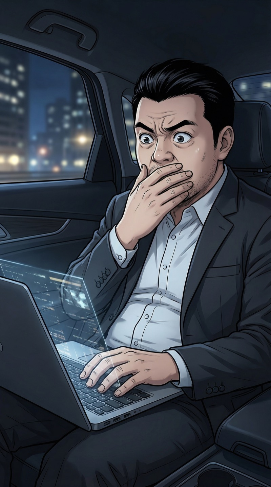
屏幕上是三年的交易记录。不是普通的商业交易——
每一笔大额并购案的前两周，都有一场"私人赌局"。赌局的赢家，恰好就是两周后并购案的获胜方。
这不是赌博，这是一条产业链。
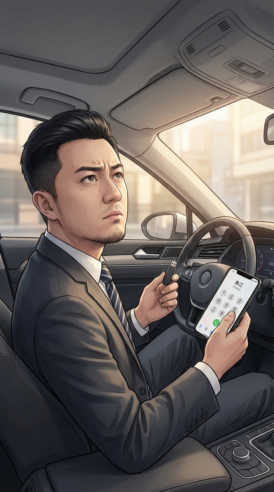
我的第一反应是报警。但黑客那部分的我在叫：你还没搞清楚全貌。
这个系统怎么运作的？谁在顶层？只交出一个U盘，能扳倒整棵大树吗？
我关掉了拨号界面，把U盘重新插回电脑。先搞清楚这盘棋到底有多大。
开出车库不到两公里，我就注意到了——后面那辆黑色GL8，已经跟我转了三个弯。
创业这几年什么妖魔鬼怪没见过，但被人尾随的感觉还真是第一次。
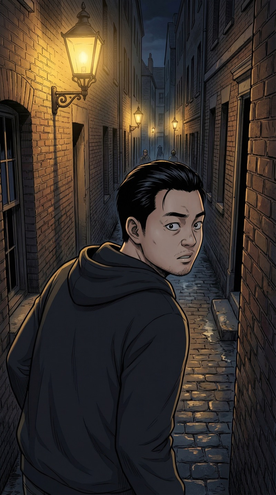
我把车停在商场地下，从员工通道溜出来，换了件连帽衫——感谢后备箱常年放着的健身袋。
说出来你可能不信，一个AI公司CEO，正在凌晨一点的老街巷子里学电影里的特工甩尾巴。
我妈要是知道，估计会说"早跟你说了别创业"。
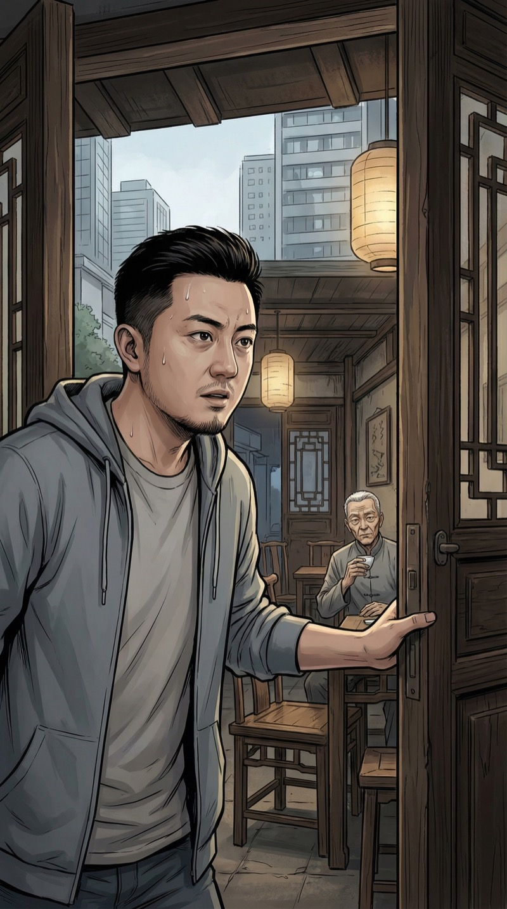
在巷子里转了二十分钟，我钻进了一间还亮着灯的茶馆。
推开门的瞬间，角落里的老人抬起头看了我一眼——那种目光，像是X光，把我从头到脚扫了个遍。
"小伙子，茶凉了，但比外面暖和。"
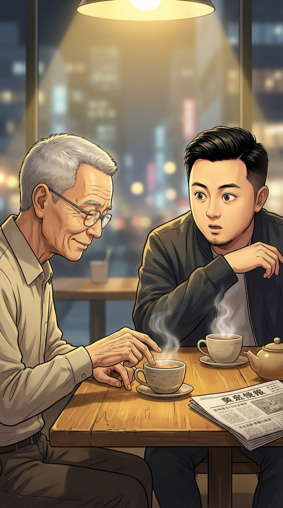
"你手上有茧——不是体力活的茧，是键盘磨出来的。走路的时候右肩比左肩低，长期侧身看屏幕。但你刚才进门扫视四周的方式不像程序员，像是被人追过。"
李叔喝了口茶。
"另外，你右手食指和中指之间有扑克牌留下的压痕。新手打牌，用力过猛。"
我沉默了五秒钟。"您是……干什么的？"
"退休的。跟你差不多的行当。不过我玩的是实体的。"
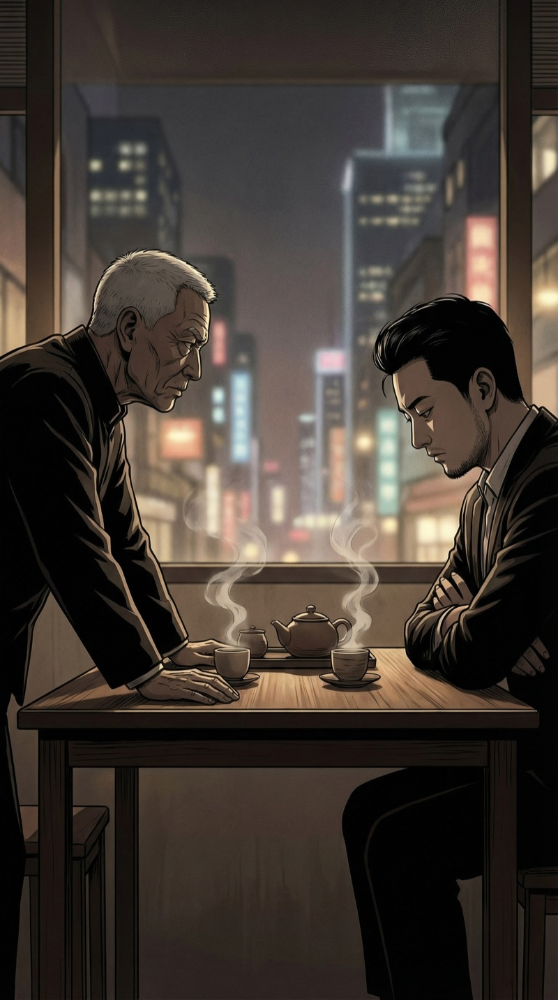
"我可以教你。"
李叔说，语气平淡得像在说今天天气不错。
"但你得帮我做一件事。现在不能告诉你是什么。"
正常人会拒绝吧？一个陌生老人，凌晨茶馆，不明条件。但我看着他那双手——骨节突出，指尖有几十年磨出来的薄茧。还有他独自坐在空茶馆里的样子。
"好。"
不知道为什么，就是觉得可以信他。也许是因为他让我想起我爷爷——也是那种话不多，但你就是知道他不会害你的人。
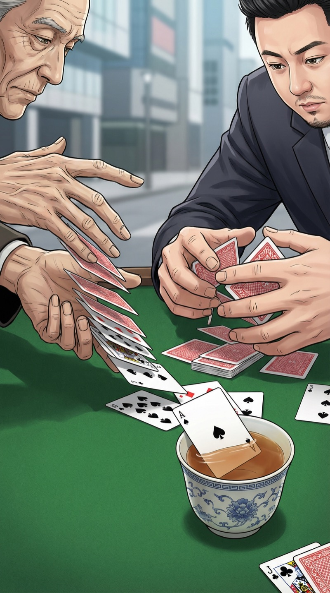
第一课：洗牌。李叔的手像是有自己的意志，52张牌在他指间像水一样流动。
我试了一下——牌飞出去三张，一张掉进茶杯里。
"你们搞AI的，"李叔第一次露出笑容，"手上功夫确实差点意思。"
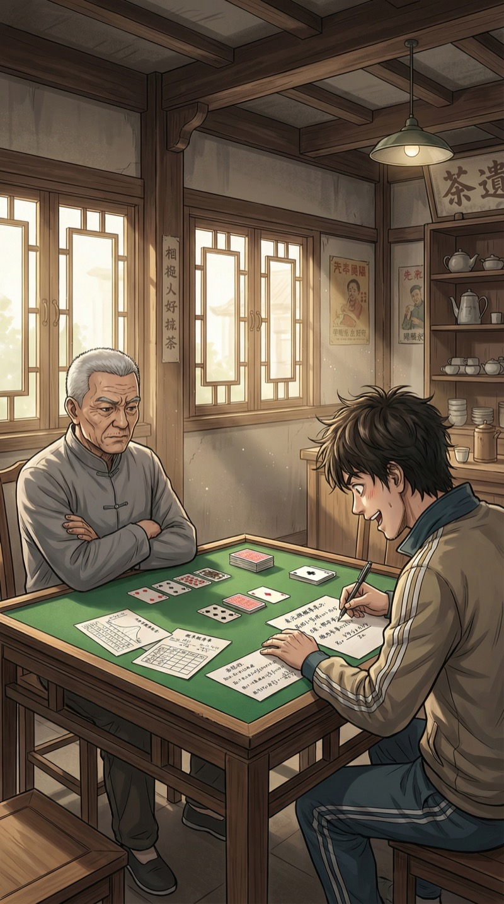
我手上功夫不行，但李叔忽略了一件事——我脑子里装着整个概率论和博弈论体系。
当我把贝叶斯推断和他的千术手法融合起来的时候，他的表情变了。
"你这个……不是在作弊。你在用数学改变游戏规则。"
我笑了。"在我的行当里，我们管这叫'算法优化'。"
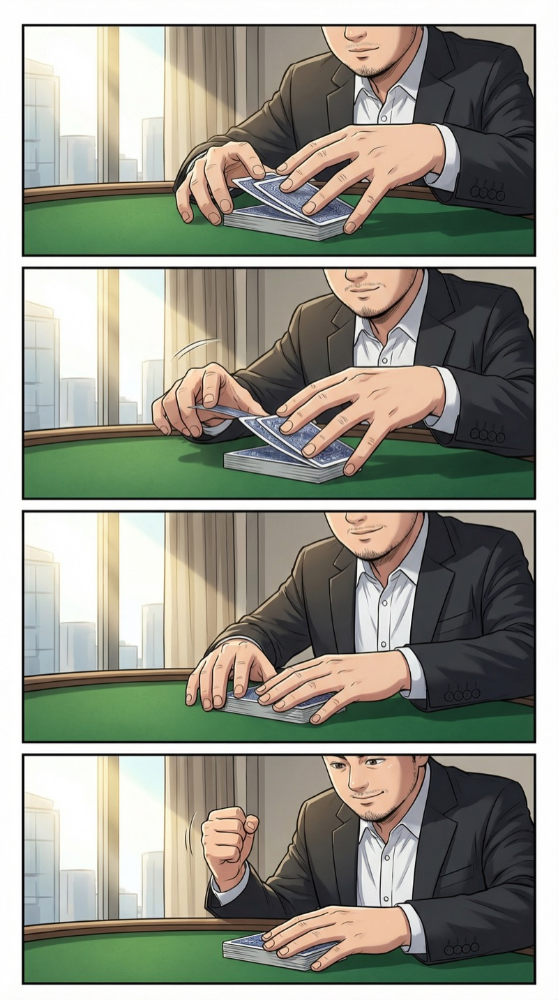
练了十二个小时，我终于能做到"定向概率控牌"——不是传统千术那种纯手法，而是在合法洗牌流程中制造微小的概率偏移。
李叔说这个手法在传统千术界没有名字，因为从来没人这么干过。
我给它起名叫"贝叶斯切牌法"。
李叔翻了个白眼："就不能起个正常点的名字？"
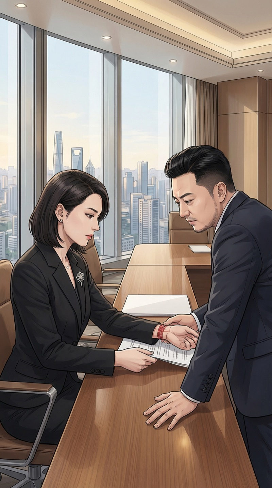
陈锋没有亲自出面，派了他的"首席谈判代表"苏婉来谈第二轮。
她递过来一份收购意向书的时候，我注意到两个细节：手腕上有被绳索一类东西磨出的擦痕，被袖口遮住了大半；领口别着一枚明显和整身行头不搭的旧胸针——银的，氧化发黑了，像是谁的遗物。
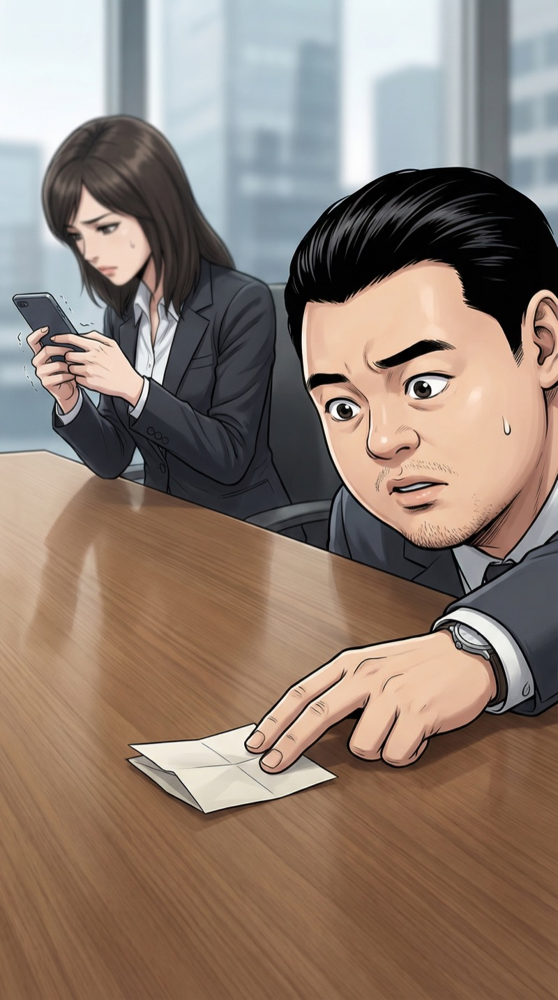
纸条上只有两个字："帮我。"
我的脑子飞速运转。理性告诉我，利用她获取陈锋的情报才是最优策略——她在敌人内部，是天然的信息源。
但我看着她发白的指关节和那枚旧胸针，想起了一件事：我妈也有一枚这样的胸针，是我奶奶留给她的，只有在最害怕的时候才会摸。
散会后，我在走廊追上她。"你安全吗？"这是我说的第一句话，不是"你能给我什么情报"。
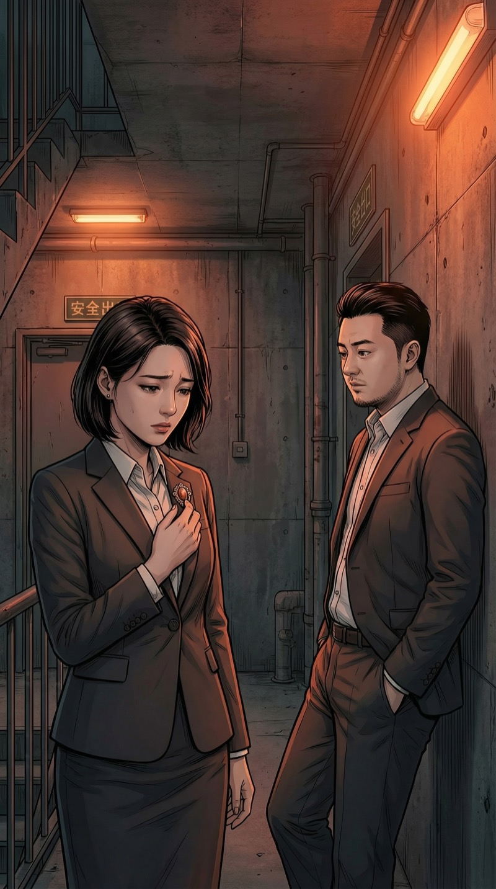
她说得很快，像是怕说慢了就不敢说了。
陈锋控制了她弟弟的手术费——一种罕见的心脏病，全国能做的医院不超过三家，而陈锋恰好是最近那家医院最大的捐赠人。
"他不需要威胁我，"她说，声音很平，"他只需要让我知道，他随时可以让那笔捐赠'出现问题'。"
那枚胸针，是她妈妈的。去年走的。
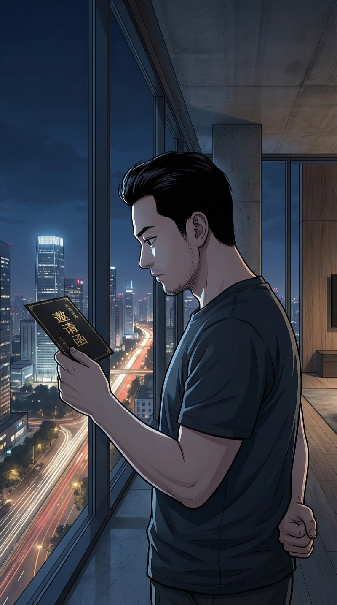
请帖在晚上八点准时送到——黑色卡片，烫金字：明晚十点，翡翠俱乐部，百家乐专场。
落款只有两个字："陈锋"。
筹码标注栏写着：星辰智能20%优先股。他终于要来真的了。
我给李叔发了条消息："明晚。"三秒后回复了一个字："嗯。"
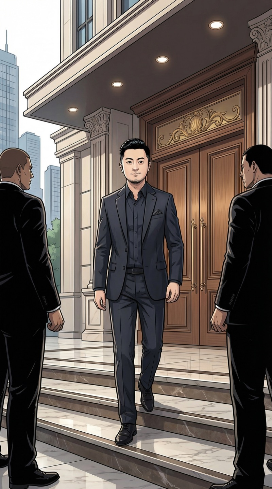
我特意没打领带。李叔说过，赌桌上穿得太正式反而会被读——"像是来赴死的"。
他让我穿得像"刚下班顺路过来"的样子。我做了调整：定制西装但不打领带，像一个有点随意的年轻老板。
毕竟我本来就是。
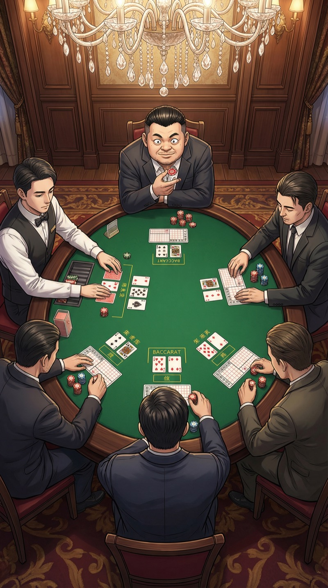
百家乐。跟德扑不一样，这个游戏的随机性更大，留给技术的空间更小。
但李叔教了我一件事：百家乐的"随机"是有记忆的——如果你能在前三十局建立贝叶斯先验模型，后面的出牌分布会逐渐收窄。
问题是，对面那个人也知道这一点。
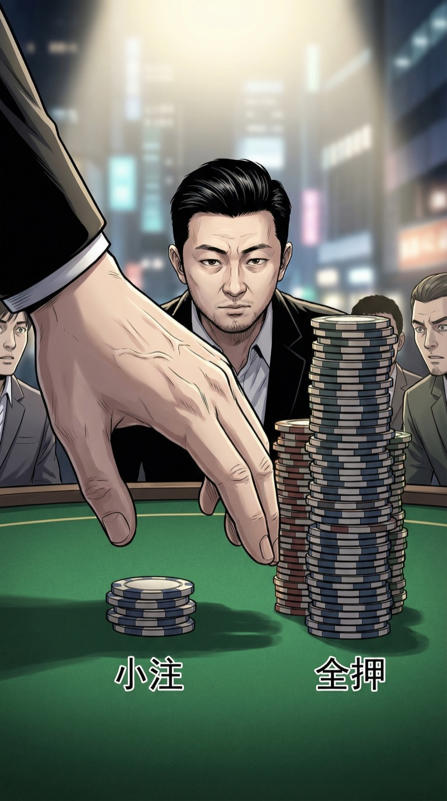
第十八手。按我的模型预测，下一轮闲家胜率67.3%。
稳健打法是押小注——赢了慢慢磨，输了也不伤筋骨。但如果我押全部，一把就能翻盘。
我想起创业的第一天，我把所有积蓄打进了公司账户。当时也有人说"稳一点"。
但我知道一个道理：在别人犹豫的地方下重注，这本身就是最大的信息量。
"加注。全部。"
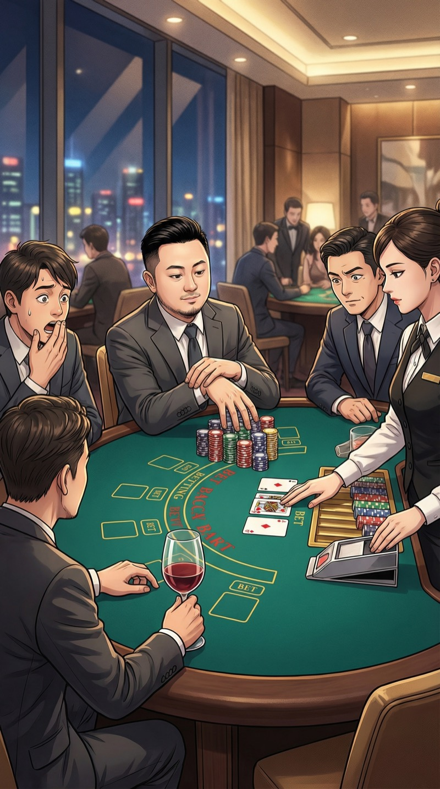
全桌安静了三秒。赌桌上三秒的沉默，相当于正常世界的半小时。
我数着心跳——62，比平时快了10下。但我的表情应该还行，至少李叔训练了我一整天的"石佛脸"。
对面那位代理人抬起眼看了我一下，手指在筹码上敲了两下。我知道这个动作——紧张。好。
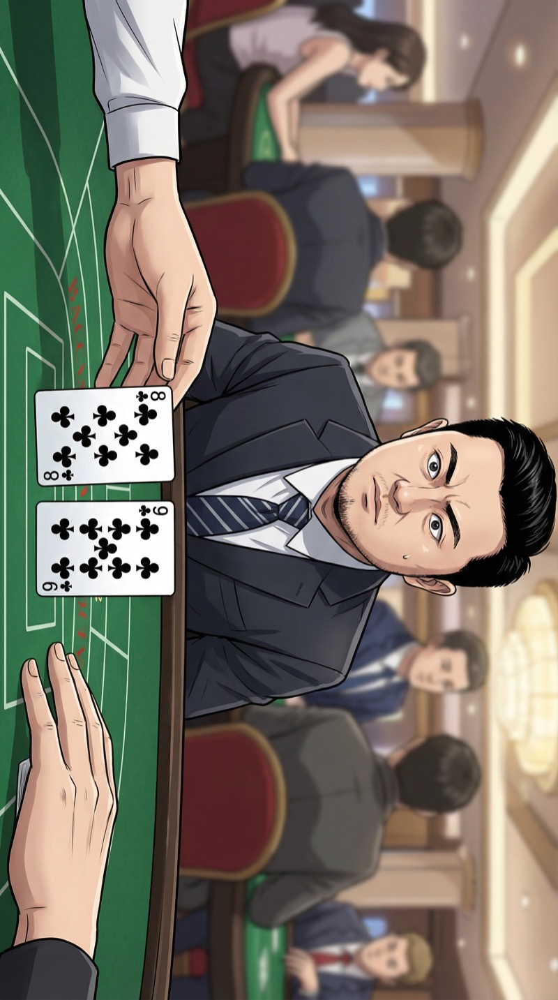
闲家8点对庄家4点。我赢了。
赢了这一手，我从落后15%翻到了领先12%。我没有笑——李叔说过，赢了不笑输了不怒，这是基本功。
但我在桌子下面悄悄攥了一下拳头。对不起了，创业CEO的职业习惯，赢了单子就想攥拳。
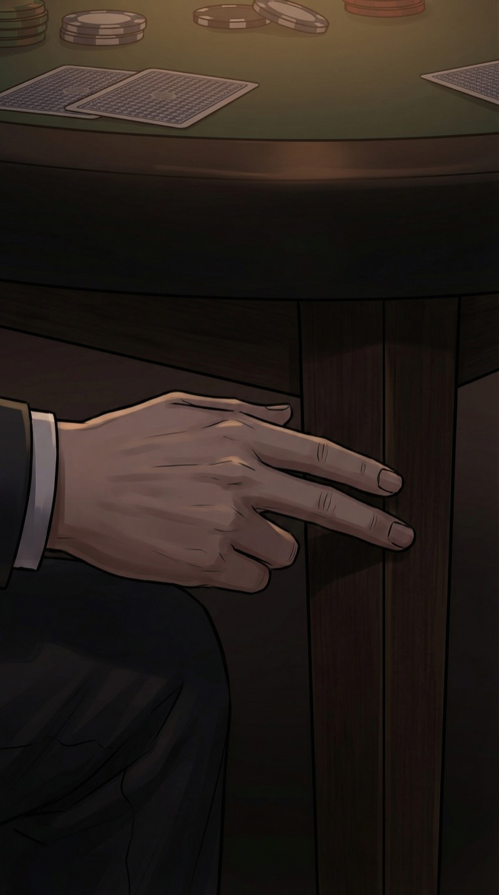
我注意到了。代理人在桌下做了个手势——左手三四指连敲三下。
下一秒，荷官的洗牌节奏变了。极微小的变化，正常人绝对看不出来。
但李叔训练过我听洗牌声——"每张牌的摩擦系数不同，打乱顺序的声音和定向插入的声音不一样。"
他们在作弊。
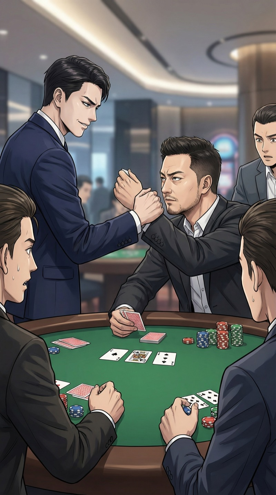
我的反击——用贝叶斯切牌法矫正被做了手脚的牌序——被看出来了。
代理人按住我的手腕，力气很大。
"朱总，您这手法……不太规矩啊。"
我心里一沉。所有人都在看我。
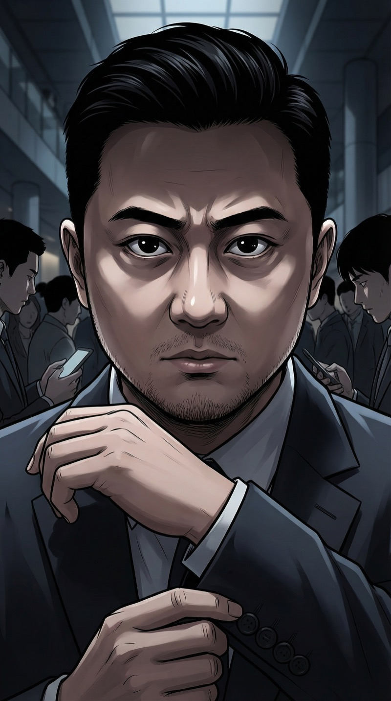
承认？还是反将一军？
承认就完了——不只是输钱，是输面子，输信用，输公司的股权谈判筹码。但不承认，我需要拿出更硬的东西。
创业路上被人堵到墙角的次数太多了。我学到的唯一一件事就是：退一步不是海阔天空，退一步就是悬崖。
"不规矩？"
我笑了笑。
"那我们来聊聊什么叫'规矩'——比如，荷官第十四手之后换了洗牌手法这件事？"
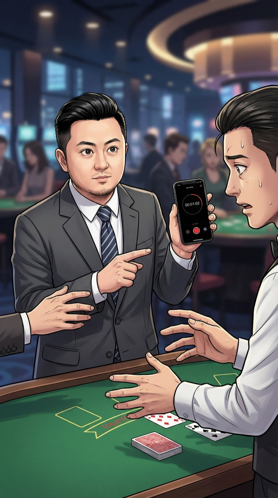
我把手机放在桌上，录音时长显示：01:47:23。从我坐下的那一刻就在录了——创业者的职业病，重要会面必录音。
"各位，我可以把第十四手之后每一次洗牌的声音频率分析给大家看。作弊的不是我。"
全桌又安静了。但这次的安静，重量不一样了。
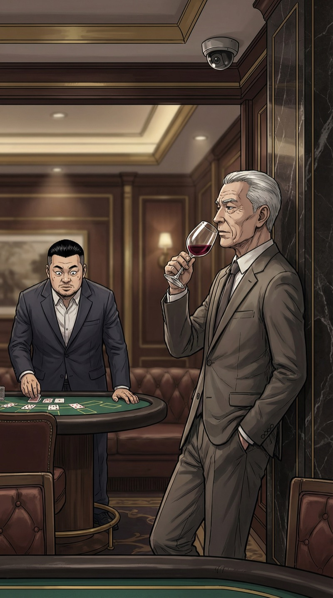
我余光扫到角落——李叔。他说不会上桌，但会"在附近喝杯酒"。
他端着酒杯冲某个方向微微一扬。我顺着看去——天花板角落的监控摄像头。
我明白了。他在告诉我：这一切，有第三只眼在看。不管是谁，今晚在场的人都不敢做得太过分。
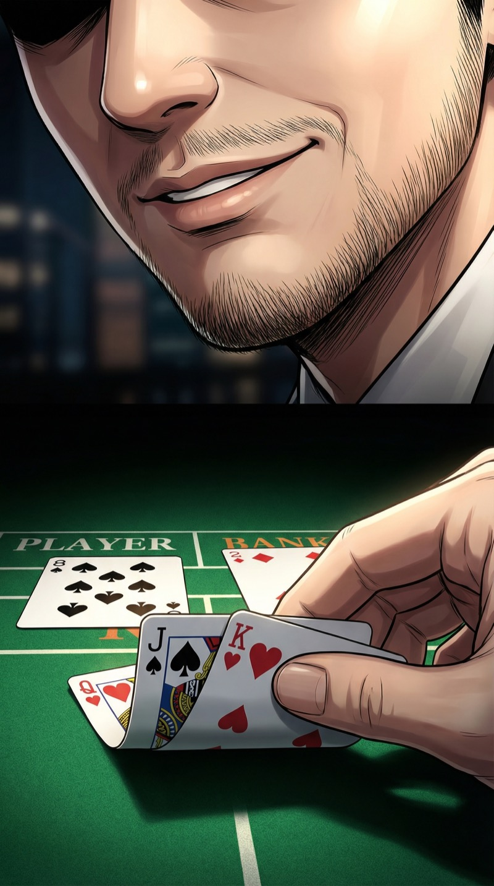
有了监控的"保护"，荷官不敢再动手脚。回到公平的牌桌上，我的贝叶斯模型开始全力运转。
最后一手，我已经算出对面的牌型有83.7%的概率不超过6点。
"陈总的人，应该不怕跟我玩一把公平的吧？"
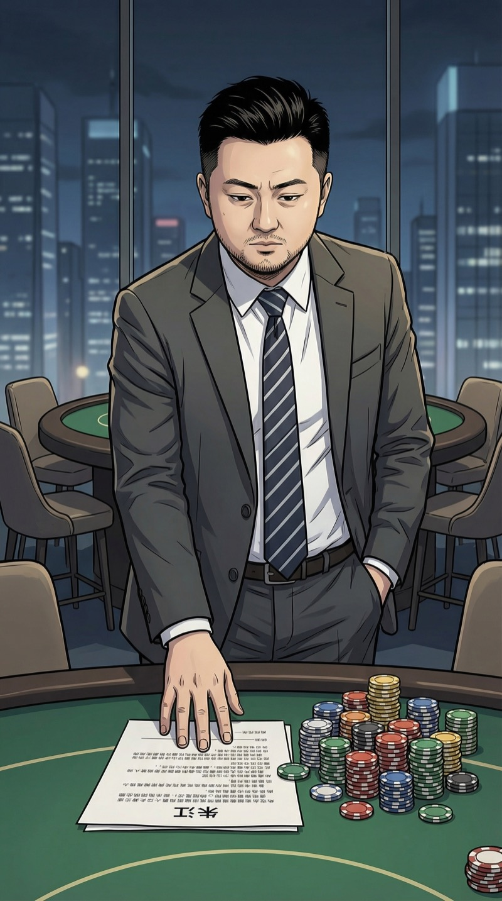
我赢了。股权保住了，还额外拿到了陈锋旗下一个数据中心三年的优先使用权——这在AI行业，相当于拿到了一座金矿的采矿权。
但我一点都高兴不起来。赢得太……顺利了。陈锋是那种"宁可翻桌也不认输"的人，他的代理人却在最后三手明显放了水。
为什么？
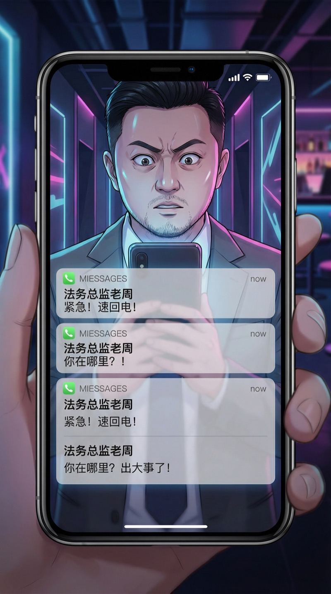
手机连震六下。法务总监老周：
"朱总，出事了"
"有人向法院申请了资产保全"
"今天下午三点来的，你手机一直没接"
"服务器机房被贴了封条"
"你快回来"
我盯着屏幕，突然明白了——陈锋今晚根本不在乎赌局输赢。赌局是声东击西。他真正的杀手锏，在法院。
我选了回去。因为星辰智能不只是一家公司——里面有一百二十个跟着我的人，有我用三年命换来的技术积累，有我许给投资人和团队的所有承诺。赌局可以再打，但公司不能丢。
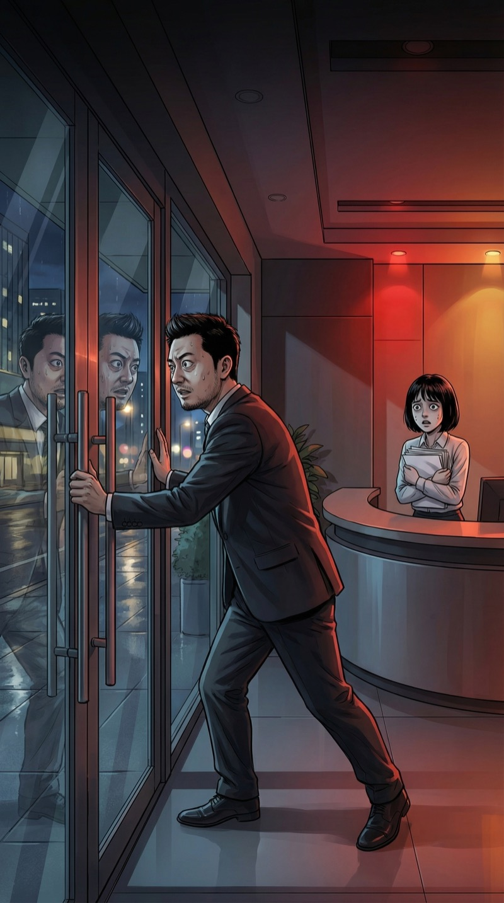
我打车飞奔到公司。十一点四十分，整层办公区只有应急灯亮着。前台小刘居然还没走——她看到我的时候，眼眶红了一圈。
"朱总，"她的声音在发抖，"今天下午来了五个人，拿着法院的裁定书……服务器机房、财务室、还有您的办公室，全贴了封条。"
她递给我那叠纸。我翻开第一页，看到了申请人那一栏的名字。
不是陈锋。
是我的联合创始人。
最亲近的人，最深的刀。